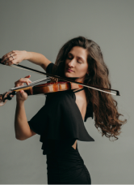
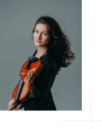
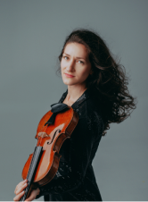

Jovana Stosic Krompic is a Serbian violinist, based in Berlin, who has dedicated herself to the interpretation of contemporary music in addition to classical music.
Born in 1992, she began her training at the "Music School for Gifted Children" in Cuprija/Serbia at the age of 6. On behalf of the Karadjordjevic royal family, she was awarded the title of Pupil of the Generation (2007/08) at the White Palace. She completed her doctoral studies at the Faculty of Music of the University of Belgrade.
She attended masterclasses with Hagai Shaham, Eszter Perenyi, David Takeno, Dmitri Semsis, Igor Petrushevski, Ljubomir Mihailovic, Maja Jokanovic, Vladislav Bobic, Vesna Stankovic, Gordan Nikolic, Jovan Kolundzija.
As a soloist, chamber musician and concertmaster, Jovana Stosic has performed at home and abroad, giving numerous solo recitals in all renowned concert halls in Serbia, as well as in Italy, France, Slovenia, Macedonia, Montenegro, Armenia, Germany, Austria, Netherlands and China, and has participated in numerous national and international festivals.
She has also played in other ensembles: American Classical Concert Chamber Orchestra, Kurpfälzisches Kammerorchester, BGO Dušan Skovran, Kamerata Serbika, Metamorfozis, Makris, String Quartet Mokranjac, Festival Maribor Orchestra, Bolshoi Festival Orchestra and as a concertmaster she performed with St. George Strings, Operosa Orchestra and Berlin Chamber Orchestra Musica Sancta, and cooperated with musicians: J. Bashmet, V. Gergiev, R. Tognetti, Giovanni Sollima, D. Matzuev, B. Campo, G. Dudamel, D. Shapovalov, N. Radulovic, R. Simovic, S. Dinic, A. Bocelli.
“. . . a very gifted violinist and a musician that has reached high international level. Her dedication and work ethic coupled with her excellent technique and good music sense have been some of her greatest assets.”
Her repertoire includes numerous contemporary works, which she has performed both as a soloist and chamber musician. While working on her doctorate, she presented two world premieres and two Serbian premieres by Serbian composer Svetislav Bozic with pianist Aleksandar Sincuk
Jovana Stosic is the winner of the first prizes at national and international competitions, including the Grand Prix of the International Festival of Slavic Music and was named the "Most Successful Young Artist 2019" and awarded renowned UMUS prize.
 She received the "Merima Dragutinović" Foundation Award as the best graduating violin student of the string instruments in the academic year 2012/13.
She has teaching experience both in Serbia and at her place of residence in Berlin. As a research assistant in the performing arts programme - violin module, she was employed at the Faculty of Music Arts in Belgrade, and currently teaches at the public music schools in Berlin, City West and Fanny Hensel.
She was a jury member of the 59th German Competiton "Jugend Musiziert" in the violin solo category .
Her students have won international prizes, given solo recitals and participated in international festivals.